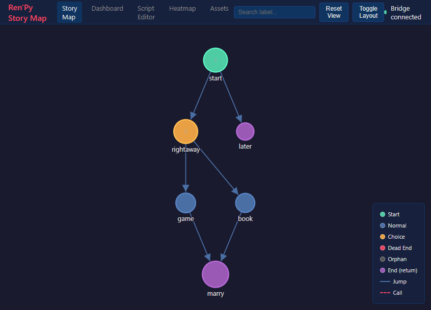
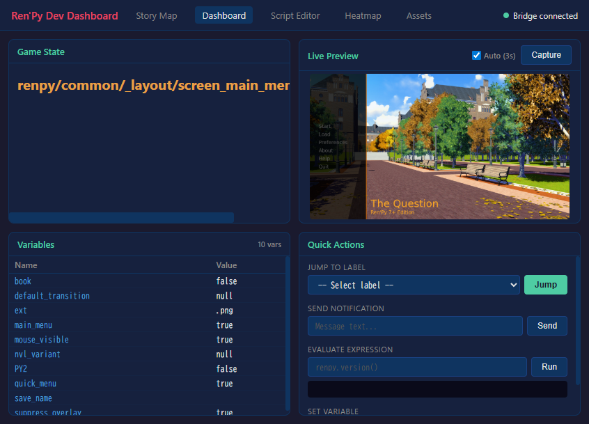

Connect your AI assistant directly to your Ren'Py project. Preview, test, analyze, translate, and live-debug your visual novel through natural language.
Every check requires launching the game, clicking through scenes, and reading files by hand. RenPy MCP + DevTools automates the entire loop.
60 tools across 10 categories covering every aspect of Ren'Py development, from first script to final build.
Lint, compile, build distributions, inspect package configuration. 7 tools to manage your project lifecycle.
Screenshot any scene by warping to it. Generate visual galleries of your entire game automatically.
Run test cases, create new tests, generate pass/fail reports across all story routes.
13 tools: character maps, variable tracking, dead-end detection, dialogue consistency, accessibility checks, and more.
List all images and audio, find unused assets, verify dimensions match your game resolution.
Rename characters and labels across all files with dry-run preview. Extract routes, insert dialogue precisely.
View completion per language, find missing strings, generate templates, prepare entries for AI translation.
12 tools for real-time debugging: eval expressions, inspect styles, jump to labels, set variables, take screenshots of the running game.
Search 89 official Ren'Py doc topics directly from your AI assistant. No browser needed.
5 visual tools in your browser: story map, dev dashboard, script editor, heatmap, and asset manager. Click-to-warp navigation.
5 interactive web tools that open in your browser. Visualize your story, control the running game, edit scripts, and manage assets — all connected to the live game via IPC bridge.

Interactive graph of all labels and connections. Color-coded by type (start, choice, dead-end, orphan). Click any node to warp the running game to that scene with correct visual state.

Real-time game state, live screenshot preview (auto-refreshing), variable inspector, and quick actions — jump to labels, evaluate expressions, send notifications, set variables.
Works with Claude Desktop, Claude Code, and any MCP-compatible client.
Download from itch.io, extract, and install with uv or pip.
cd renpy-mcp
uv venv && uv pip install -e .
Add the server to your MCP client config with your SDK path.
{
"mcpServers": {
"renpy-mcp": {
"command": "uv",
"args": ["run", "renpy-mcp"],
"env": { "RENPY_SDK_PATH": "..." }
}
}
}
Ask your AI assistant to work with your Ren'Py project in natural language.
"Set my project to /path/to/game"
"Show me the character map"
"Take a screenshot of chapter 2"
"How complete are translations?"
CLI batch for offline analysis, file-based IPC for live game debugging.
AI Client MCP Protocol RenPy MCP + DevTools (Claude) <--- JSON-RPC over stdio ---> (Python) | +------+------+ | | CLI Batch File IPC renpy.exe bridge_script.rpy (lint, (cmd.json → test, status.json) warp, compile)
RenPy MCP + DevTools is an MCP (Model Context Protocol) server that connects AI assistants like Claude directly to Ren'Py visual novel projects. It provides 60 tools across 10 categories — project management, visual preview, automated testing, story analysis, asset management, refactoring, translation, live debugging, web dashboard, and documentation search — all accessible through natural language.
RenPy MCP + DevTools works with any MCP-compatible AI client, including Claude Code, Claude Desktop, and other tools that support the Model Context Protocol. No vendor lock-in.
Ren'Py SDK 8.x, Python 3.11+, and an MCP-compatible AI client. Runs on Windows, macOS, and Linux.
Yes. The screenshot_scene tool warps Ren'Py to any script location and captures a real game screenshot automatically. Describe the scene in natural language and the AI finds the right location.
Yes. 7 translation tools: list_translations shows completion % per language, find_untranslated lists missing strings, and auto_translate prepares entries for AI-assisted translation. Supports all languages Ren'Py handles.
Yes. The live integration suite (12 tools) connects to a running game via a file-based IPC bridge. Evaluate expressions, inspect styles, jump to labels, set variables, and take screenshots — all while the game runs.
$5 USD one-time purchase on itch.io. No subscriptions or recurring fees. Use it on any number of projects.
60 tools. One server. Ship your visual novel faster.